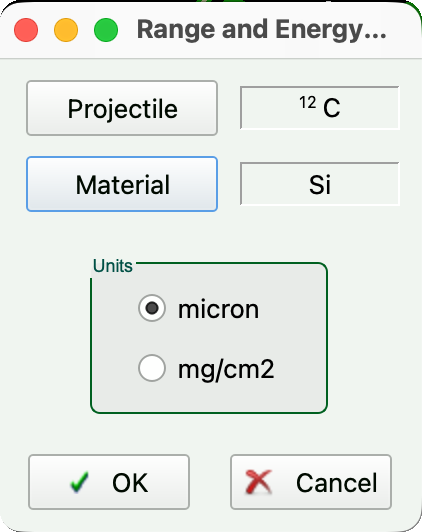
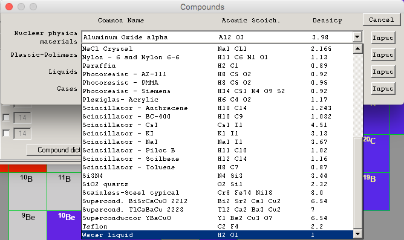
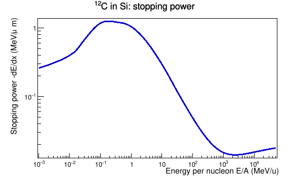
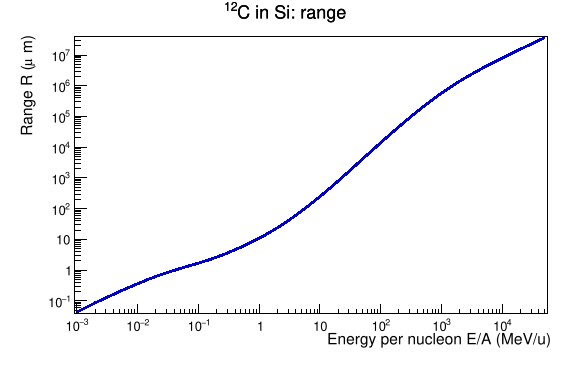
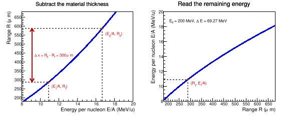

本教程面向已学过 ROOT Tutorial I
的学生，以碳离子在硅中的减速为例，介绍如何从 LISE++
获得阻止本领和射程数据，用 TGraph
读入、画图与插值，并计算粒子穿过材料后的能量。阻止本领和射程的物理背景见第一章课件。
C++ 和 Python（PyROOT）两版都在 Jupyter
中逐段运行，使用相同的数据、ROOT 对象和计算方法。C++ 版选择 ROOT
C++ 内核，由 Cling 执行代码；PyROOT 版选择 Python
3 内核，通过 import ROOT 使用
ROOT。选择自己在前面教程中使用的语言即可。
把每个代码块放入一个代码单元格，从上到下用 Shift+Enter
执行。变量、函数和 ROOT
对象会保留在当前内核中，供后续单元格使用；不需要把这些代码包在
main()
中。修改前面的函数定义或运行顺序后，可重启内核并从头运行。
代码语言：
完整示例：lise_example.C · lise_example.py。两版均只需要本页提供的两个文本数据文件，无需在运行代码时启动 LISE++。
LISE++ 是用于计算稀有同位素束产生、传输和分离的软件，也提供独立的射程、能损和运动学计算工具。这里使用其中的能损工具，不需要设置完整的束流线。软件提供 Windows、macOS 和 Linux 版本，可从官方下载页获取。
SRIM（Stopping and Range of Ions in Matter）用于计算离子在物质中的阻止和输运。它的 stopping/range tables 提供阻止本领、射程等数据；其中的 TRIM 程序还可逐个模拟离子在多层材料中的运动，用于研究注入深度、散射和辐照损伤。LISE++ 和 SRIM 都能提供离子减速计算所需的数据，但输出量的定义和所用模型需要分别核对。
对指定的入射核素和材料，最先要用到的是两条曲线：
这些结果依赖入射核素、材料组成、密度和能量。比较不同软件或模型时，应保持这些条件一致，并在实际使用的能区比较结果。软件能输出某个能量点，并不代表所有模型在那里具有相同精度。
还要区分两种常见的“射程”：连续慢化近似下的射程由阻止本领积分得到；投影射程（projected range）则是沿初始入射方向的平均穿透深度。散射会使二者不同，SRIM 输出的 projected range 不能直接当作可相减的路径长度使用。下文采用均匀材料、近似直线运动下的连续慢化计算。两种射程的定义见 NIST 的说明。
在 Utilities 菜单中找到
Plots: Energy loss, Ranges, Straggling, etc.，选择
Stopping Power (dE/dx) in material versus Energy。
在设置窗口的 Projectile 中选择 \(^{12}\mathrm{C}\)，在 Material
中选择 Si，在长度单位中选择
micron。核素必须包含质量数：同一元素的不同同位素并不具有相同的总能量和射程。

本例横坐标是每核子能量 \(\varepsilon=E/A\)，单位为 MeV/u；阻止本领的纵坐标单位是 MeV/μm。这里的 \(E\) 是离子的总动能，\(A\) 是质量数。例如，10 MeV/u 的 \(^{12}\mathrm{C}\) 总动能为 120 MeV；读出的阻止本领已经是该离子的总能量损失率，不需要再乘以 12。
材料若为化合物，可在 Material 中进入
Compound dictionary。例如选择 Water liquid
后，应检查其组成为
H₂O、密度对应液态水。密度决定长度与面密度之间的换算，不能只改材料名称而保留不适用的密度。

计算后，图中会同时出现几种模型的结果。在曲线窗口选择
Save As，将数据保存为文本文件。再回到射程和能损工具，选择
Range in material versus Energy，使用相同的核素、材料、单位和模型，保存射程数据。
下载本页使用的两个文件，并放在同一工作目录中：
用文本编辑器打开文件，可以看到前三行是标题和曲线说明，后面每一行包含若干组“能量、结果”。每条曲线占两列，曲线编号从 0 开始；编号 4 对应第 9、10 列，而不是第 4 列。
本例两个文件中的曲线 4 都是
ATIMA 1.4 H.Weick, improved mean charge formula for HI，下面固定读取这一条以便复现结果。对自己导出的文件，应重新核对表头。阻止本领文件中还包含电子、核阻止分量，射程文件中还包含射程涨落和横向射程；这些列不能混作总阻止本领或平均射程。
若改用 mm，必须同时换算数据和材料厚度：
\[ R(\mathrm{mm})=\frac{R(\mu\mathrm{m})}{1000},\qquad S(\mathrm{MeV/mm})=1000\,S(\mathrm{MeV}/\mu\mathrm{m}). \]
下面把读文件的过程写成 readLise 函数。参数
filename 是文件名，curve
是曲线编号；返回值是存有这条曲线的
TGraph。同一函数既能读取阻止本领，也能读取射程。
在 ROOT C++ notebook 的第一个代码单元格中启用交互绘图：
%jsroot on%jsroot on 是 Jupyter 命令，可使 ROOT
图在单元格下方显示并支持缩放。然后在下一个单元格载入所需的头文件：
#include <TCanvas.h>
#include <TGraph.h>
#include <fstream>
#include <iostream>
#include <sstream>
#include <string>TGraph *readLise(const char *filename, int curve)
{
std::ifstream fin(filename);
if (!fin.is_open()) {
std::cout << "Cannot open " << filename << std::endl;
return nullptr;
}
std::string line;
for (int i = 0; i < 3; i++)
std::getline(fin, line); // skip the three header lines
TGraph *g = new TGraph();
while (std::getline(fin, line)) {
std::stringstream row(line);
double energy, value;
for (int i = 0; i <= curve; i++)
row >> energy >> value;
if (row)
g->SetPoint(g->GetN(), energy, value);
}
fin.close();
g->Sort();
return g;
}ifstream 打开文本文件；getline(fin, line)
每次读入一整行，读到文件末尾时循环结束。stringstream row(line)
让程序可以从这一行中依次提取数值，>>
会自动跳过空格和制表符。
内层循环每次读一对数；当 curve = 4
时，共读五对，最后留在 energy 和 value
中的就是曲线 4 的数据。if (row)
检查这些数是否成功读出，避免把空行加入图中。文件打不开时返回
nullptr，应先修正文件位置，再运行后续代码。
先导入 PyROOT 和 NumPy。NumPy 用于读入数值数组，ROOT 用于保存曲线、画图和插值：
import ROOT
import numpy as np导入 ROOT 后，在下一个代码单元格运行 %jsroot on，启用
notebook 中的交互式 ROOT 图。然后定义读取函数：
def readLise(filename, curve):
data = np.loadtxt(filename, skiprows=3,
usecols=(2 * curve, 2 * curve + 1))
energy = np.ascontiguousarray(data[:, 0])
value = np.ascontiguousarray(data[:, 1])
g = ROOT.TGraph(len(energy), energy, value)
g.Sort()
return gimport numpy as np 把 NumPy 简写为
np。loadtxt
读取以空白分隔的数值文本，自动将数据转为浮点数；skiprows=3
跳过前三行表头，usecols 指定要读取的列。列下标从 0
开始，所以曲线 4 的两个下标是 8、9，一般写为
2 * curve、2 * curve + 1。
data 是一个有 268 行、2 列的 NumPy
数组。data[:, 0] 取所有行的第一列，data[:, 1]
取第二列，其中冒号表示“所有行”。从二维数组取出的一列可能在内存中并不连续，np.ascontiguousarray
将其整理为 ROOT 构造函数所需的连续数组。loadtxt 默认读入 64
位浮点数，与 C++ 的 double 对应。
TGraph(len(energy), energy, value)
一次传入点数、横坐标数组和纵坐标数组，创建整条曲线。若提示
FileNotFoundError，应检查文件位置；若无法转换为数值，应检查表头行数和选取的列。读取参数见
NumPy
的 loadtxt 文档。
GetN() 返回已有点数；SetPoint(GetN(), x, y)
在图的末尾添加一个点，后面补充射程零点时会用到。Sort()
按横坐标递增排列。函数中的三行表头和成对列结构对应本页示例文件，换用其他格式时需要相应修改读取部分。
TGraph *gStopping = readLise("12C-dedx_in_Si.txt", 4);
std::cout << "Points: " << gStopping->GetN() << std::endl;
TCanvas *cStopping = new TCanvas("cStopping", "Stopping power", 900, 600);
cStopping->SetLogx();
cStopping->SetLogy();
gStopping->SetTitle("^{12}C in Si;E/A (MeV/u);-dE/dx (MeV/#mu m)");
gStopping->Draw("AL");
cStopping->Draw();
double stopping10 = gStopping->Eval(10.0);
std::cout << "S(10 MeV/u) = " << stopping10 << " MeV/um" << std::endl;gStopping = readLise("12C-dedx_in_Si.txt", 4)
print("Points:", gStopping.GetN())
cStopping = ROOT.TCanvas("cStopping", "Stopping power", 900, 600)
cStopping.SetLogx()
cStopping.SetLogy()
gStopping.SetTitle("^{12}C in Si;E/A (MeV/u);-dE/dx (MeV/#mu m)")
gStopping.Draw("AL")
cStopping.Draw()
stopping10 = gStopping.Eval(10.0)
print(f"S(10 MeV/u) = {stopping10:.6g} MeV/um")TCanvas
的四个参数依次是对象名称、窗口标题、宽度和高度；这里的 900、600
以像素为单位。数据跨越多个数量级，SetLogx()、SetLogy()
分别把横、纵轴设为对数刻度，它们只改变显示方式，不改变保存的数据。
SetTitle
中两个分号把图标题、横轴标题和纵轴标题分开。ROOT 图中 ^{12}
表示上标，#mu 表示 μ。Draw("AL") 中
A 要求画坐标轴，L
要求以直线连接相邻的数据点。

程序应读入 268 个点，并得到 \(S(10\ \mathrm{MeV/u})=0.294849\ \mathrm{MeV}/\mu\mathrm{m}\)。例如这时经过 1 μm 的 Si，能损很小，可以近似取 \(\Delta E\simeq S\Delta x=0.295\) MeV。
TGraph::Eval(x)
在给定横坐标处求纵坐标，默认在相邻点之间做线性插值，没有拟合新的物理模型。如果
x 超出数据范围，ROOT
会外推；程序不会自动判断这种外推是否合理，因此计算前应检查所需能区是否被数据覆盖。参见
ROOT 的
TGraph 文档。
用同一函数读入射程文件。现在横坐标仍是 \(E/A\)，纵坐标变为 \(R\)，单位为 μm。
TGraph *gRange = readLise("12C-range_in_Si.txt", 4);
TCanvas *cRange = new TCanvas("cRange", "Range", 900, 600);
cRange->SetLogx();
cRange->SetLogy();
gRange->SetTitle("^{12}C in Si;E/A (MeV/u);Range (#mu m)");
gRange->Draw("AL");
cRange->Draw();
double range10 = gRange->Eval(10.0);
std::cout << "R(10 MeV/u) = " << range10 << " um" << std::endl;gRange = readLise("12C-range_in_Si.txt", 4)
cRange = ROOT.TCanvas("cRange", "Range", 900, 600)
cRange.SetLogx()
cRange.SetLogy()
gRange.SetTitle("^{12}C in Si;E/A (MeV/u);Range (#mu m)")
gRange.Draw("AL")
cRange.Draw()
range10 = gRange.Eval(10.0)
print(f"R(10 MeV/u) = {range10:.6g} um")
结果为 \(R(10\ \mathrm{MeV/u})=249.686\ \mu\mathrm{m}\)。这表示总能量为 120 MeV 的碳离子，在本例的连续慢化模型下约需 250 μm 的 Si 才能停止。
接下来还需要反过来计算：给定剩余射程，求剩余能量。由于这条射程曲线单调递增，可以把每个点的两个坐标交换，构造反函数 \(\varepsilon(R)\)。先补上物理边界点 \((0,0)\)，然后交换坐标：
gRange->SetPoint(gRange->GetN(), 0.0, 0.0);
gRange->Sort();
TGraph *gEnergy = new TGraph(gRange->GetN(), gRange->GetY(), gRange->GetX());
gEnergy->Sort();
std::cout << "E/A at R = 249.686 um: "
<< gEnergy->Eval(249.686) << " MeV/u" << std::endl;gRange.SetPoint(gRange.GetN(), 0.0, 0.0)
gRange.Sort()
gEnergy = ROOT.TGraph(gRange.GetN(), gRange.GetY(), gRange.GetX())
gEnergy.Sort()
print(f"E/A at R = 249.686 um: {gEnergy.Eval(249.686):.6g} MeV/u")这里 TGraph
的三个参数是点数、新横坐标数组、新纵坐标数组。GetY()
提供原来的射程数组，放到新图的横轴；GetX()
提供原来的每核子能量数组，放到新图的纵轴。新图复制这些点，gRange
与 gEnergy 分别保存 \(R(E/A)\) 和 \((E/A)(R)\)。
上面的反向计算应返回 10 MeV/u。零点用于表示完全停止；它与第一个非零数据点之间的直线只是数值近似。研究接近停止时的细节，需要更密的低能数据。阻止本领曲线不应照此补上 \((0,0)\)。
设总能量为 \(E_0=200\) MeV 的 \(^{12}\mathrm{C}\) 垂直入射 300 μm 厚的 Si。先把总能量转为曲线使用的每核子能量，再查出初始射程：
\[ \varepsilon_0=\frac{E_0}{A},\qquad R_0=R(\varepsilon_0). \]
若材料厚度 \(\Delta x<R_0\)，粒子穿出材料后还可走过 \(R_1=R_0-\Delta x\) 的路程。由反函数得到剩余能量，继而求出能损：
\[ \varepsilon_1=\varepsilon(R_1),\qquad E_1=A\varepsilon_1,\qquad \Delta E=E_0-E_1. \]
若 \(\Delta x\geq R_0\)，粒子停在材料内，取 \(E_1=0\)、\(\Delta E=E_0\)。
int A = 12;
double E0 = 200.0; // total energy, MeV
double dx = 300.0; // Si thickness, um
double E0_A = E0 / A; // energy per nucleon, MeV/u
double R0 = gRange->Eval(E0_A);
double E1 = 0.0;
if (dx < R0) {
double R1 = R0 - dx;
E1 = A * gEnergy->Eval(R1);
}
double dE = E0 - E1;
std::cout << "R0 = " << R0 << " um" << std::endl;
std::cout << "E1 = " << E1 << " MeV" << std::endl;
std::cout << "dE = " << dE << " MeV" << std::endl;A = 12
E0 = 200.0 # total energy, MeV
dx = 300.0 # Si thickness, um
E0_A = E0 / A # energy per nucleon, MeV/u
R0 = gRange.Eval(E0_A)
E1 = 0.0
if dx < R0:
R1 = R0 - dx
E1 = A * gEnergy.Eval(R1)
dE = E0 - E1
print(f"R0 = {R0:.6g} um")
print(f"E1 = {E1:.6g} MeV")
print(f"dE = {dE:.6g} MeV")本例得到 \(R_0\simeq587.40\ \mu\mathrm{m}\)，\(R_1\simeq287.40\ \mu\mathrm{m}\)，从而
\[ E_1\simeq130.73\ \mathrm{MeV},\qquad \Delta E\simeq69.27\ \mathrm{MeV}. \]

在连续慢化近似中，若射程与阻止本领来自同一模型，二者满足
\[ R(\varepsilon)=A\int_0^\varepsilon\frac{d\varepsilon'}{S(\varepsilon')}, \qquad \Delta x=A\int_{\varepsilon_1}^{\varepsilon_0} \frac{d\varepsilon}{S(\varepsilon)}. \]
因此，剩余射程法与积分 \(dE/dx\) 在物理上是等价的。前者用两次查表直接得到出射能量，适合反复计算不同材料厚度；后者便于逐步记录沿途的能量和局部沉积。数值差别主要来自表格密度、插值方式、积分步长及模型的一致性，不能笼统认为 range 方法更准确。
只使用入射点的 \(S(E_0/A)\Delta x\) 是另一种近似：它把整层材料中的阻止本领视为不变。本例能量由 200 MeV 降到约 131 MeV，不能直接按“很薄的一层”处理。逐步使用 \(E_{i+1}=E_i-S(E_i/A)\delta x\) 时，应减小 \(\delta x\) 检查结果是否收敛。
上述计算忽略能损涨落、散射和核反应；它给出连续慢化近似下的确定性能损，不能给出能谱宽度或停止概率。把 \(\Delta x\) 当作材料厚度还隐含垂直入射；斜入射时要先换成实际路程。
把上一节的步骤写成函数后，就可以改变入射能量或厚度而重复使用。这里两条曲线必须属于待计算的同一个核素和材料。参数
A 是质量数，E0_A
是入射能量/核子，dx
与射程使用同一长度单位；返回值为总能损，单位 MeV。
double eloss(int A, double E0_A, double dx,
TGraph *gRange, TGraph *gEnergy)
{
if (E0_A == 0.0 || dx == 0.0)
return 0.0;
double E0 = A * E0_A;
double R0 = gRange->Eval(E0_A);
if (dx >= R0)
return E0;
double R1 = R0 - dx;
double E1_A = gEnergy->Eval(R1);
return E0 - A * E1_A;
}std::cout << eloss(12, 200.0 / 12.0, 300.0, gRange, gEnergy) << std::endl;
std::cout << eloss(12, 200.0 / 12.0, 700.0, gRange, gEnergy) << std::endl;
std::cout << eloss(12, 200.0 / 12.0, 0.0, gRange, gEnergy) << std::endl;def eloss(A, E0_A, dx, gRange, gEnergy):
if E0_A == 0.0 or dx == 0.0:
return 0.0
E0 = A * E0_A
R0 = gRange.Eval(E0_A)
if dx >= R0:
return E0
R1 = R0 - dx
E1_A = gEnergy.Eval(R1)
return E0 - A * E1_Aprint(eloss(12, 200.0 / 12.0, 300.0, gRange, gEnergy))
print(eloss(12, 200.0 / 12.0, 700.0, gRange, gEnergy))
print(eloss(12, 200.0 / 12.0, 0.0, gRange, gEnergy))三次结果分别约为 69.27、200、0
MeV，对应穿出、停止和零厚度。调用时，入射能量和厚度应为非负值，所需能区应在数据覆盖范围内。若计算另一核素，应先换用它的曲线，不能只修改参数
A。
对连续多层材料，每经过一层就用 \(E\leftarrow E-\Delta E\) 更新总能量；进入下一层时再计算 \(E/A\)，并使用下一层材料的曲线。粒子停止后，后续层中的能量沉积为零。
将 notebook
和两个文本数据文件放在同一目录。按上面的代码块逐格运行后，可在新单元格中直接使用
gStopping、gRange、gEnergy 和
eloss，改变能量或材料厚度继续计算。保存图像时，在新单元格中调用
SaveAs：
cStopping->SaveAs("stopping_power.svg");
cRange->SaveAs("range.svg");文件扩展名决定输出格式，需要 PNG 或 PDF 时，只需改变扩展名。
下载的 lise_example.C
把相同计算整理为一个可重复运行的完整示例。在新的 ROOT C++ notebook
中，也可用一个代码单元格直接执行这个文件：
.x lise_example.C.x 读取文件并执行其中的 lise_example()
函数。逐格学习使用上面的代码块；完整文件用于一次复现全部计算和输出。需要在终端复用时，也可以在
ROOT 提示符下执行同一个 .x 命令。
cStopping.SaveAs("stopping_power.svg")
cRange.SaveAs("range.svg")文件扩展名决定输出格式，需要 PNG 或 PDF 时，只需改变扩展名。
在新的 Python notebook 中，也可用一个代码单元格运行下载的完整示例：
%run lise_example.py%run 执行当前目录中的 Python 文件，运行后可以继续查看
gStopping、gRange 和
gEnergy。需要在终端复用时，也可运行
python3 lise_example.py。
两版完整程序都会输出上述数值，并保存 stopping_power.svg
和 range.svg。